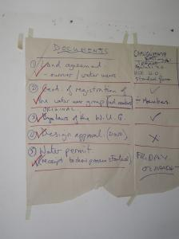
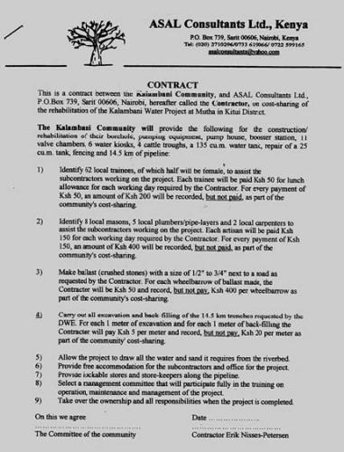
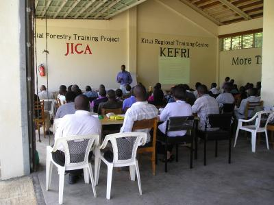

{kind=link}
Introduction
| It is important to obtain the required permits, as described in the data sheet on Surveys, designs and permits for water projects, before starting any construction of water supply systems. Structures built without these legal requirements are illegal and might have to be destroyed without any compensation. In Kenya, the Water Services Boards (WSBs) are forming their policy on construction of small water projects for individuals and community groups. Abstraction of shallow and deep ground water by means of hand-dug wells and boreholes, as well as abstracting water from streams, must be approved by the WSBs and an annual fee paid for the extraction permit.
The Water Resource Management Authority published a document on 25/02/09 entitled "Guidelines for Determination of Permit Classification for Water Storage Structures" which :says: "First, small pans, where the water is held below ground level, do not require a permit provided the capacity is less than 10,000 m3. If the capacity will be greater than this the community, or the farmer should apply to the Regional office of the Water Resource Management Authority (WRMA) for permission to construct." Also permits from WSB and the National Environmental Management Authority (NEMA) must be obtained before wells, intakes, boreholes, subsurface dams, weirs and sand dams are built in seasonal riverbeds as well as other types of water supply systems. Collection of rainwater from roofs of private buildings does not require any approvals. |
|  |
| Check list |
|
(c) E. Nissen-Petersen, Kenya
|
Seasonal Work Plan
Financial capacity
Preferably, all the money required for the construction work should be available if the structure is expected to be completed within a short period. Alternatively, the structure can be built in stages according to the availability of funds.
Evaluating builders' qualifications
One of the best methods to sort out doubtful builders is to ask them technical questions, e.g.:
1. What is the correct mixture and thickness of cement to sand and ballast for concreting the foundation and floor of water tanks?
- The answer is 15 cm of 1:3:4 followed by a 2 cm coat of 1:3 mortar onto which NIL (cement slurry) is applied the same day for water proofing.
2. Which type sand should be used for concrete?
- The answer is coarse textured river sand
3. Which type of sand can be used for final plastering?
- The answer is fine textured river sand, not sand collected from dirt roads.
4. What happens if cement is mixed with sand and water that is not applied within one hour?
- The answer is that the strength of cement will be reduced to half.
5. For how long should concrete and plaster work be cured, that is to be keep moist under shade?
- The answer is 28 days. If cured less, the cement loses its strength.
6. What does this technical design drawing show?
Employment of builders
Artisans are paid a daily salary for an unknown number of days as agreed verbally between the client and the artisan before the work starts. This is the most popular method of undertaking construction works in rural areas because both the client and the artisan can cancel the agreement any time provided the client pays the artisan for the number of days that he has worked. This type of flexible agreement is excellent where clients can supervise the artisans but is often abused by artisans if they are not supervised on a daily basis.
|  |
| A contract with a contractor on building a hand-dug well |
| (c) E. Nissen-Petersen, Kenya
|
Contractors quote a fixed price for a certain construction work that is described in details either in a survey and design report or verbally by the client. In both cases, the contractor and the client will haggle about the quoted price while discussing whether food, accommodation, transport and unskilled labourers are included.
While this kind of verbal contract is accepted for small private construction works, it should be formulated and signed in a contract for larger private and community building projects. Such contracts should have clauses on the rates of payments, retention fee, health and accident insurance, tax payments and other financial issues as shown below.
Although such non-flexible contracts usually increase the cost of the construction works, they require less supervision by the clients and reduce the overall cost of the project. However, in case of disagreements between the client and the contractor that may lead to cancellation of the contract, they have to make a financial settlement which may require one or two impartial persons to arbitrate.
In negotiations with artisans and contractors it is useful to know the average number of working days it will take to built various types of structures. The following data is based on more than three decades of actual construction works of the types of water projects listed below. As a rule of thumb, a contractor earns a fee being double of an artisan`s salary and an artisan earns a salary being double of an unskilled labourer`s salary.
Average working days on various types of water projects
| Water source | Structure | Artisans or contractors | Unskilled labourers |
| Roof catchments | 3 cu.m. ferro-cement jar | 5 | 5 |
| Roof catchments | 5 cu.m. concrete in situ tank | 8 | 16 |
| Roof catchments | 10 cu.m. brick or block tank | 10 | 20 |
| Roof catchments | 11 cu.m. ferro-cement tank | 10 | 20 |
| Roof catchments | 23 cu.m. ferro-cement tank | 20 | 30 |
| Roof catchments | 46 cu.m. ferro-cement tank | 28 | 42 |
| Roof catchments | 90 cu.m. ferro-cement tank | 42 | 80 |
| Shallow groundwater | 8 metres deep hand-dug well | 24 | 144 |
| Dry sandy riverbeds | 18 metres long subsurface dam | 22 | 280 |
| Dry sandy riverbeds | 50 metres long weir | 26 | 336 |
| Dry sandy riverbeds | 28 metres long sand dam | 42 | 560 |
| Roads and farmland | 130 cu.m. berkad ground tank | 40 | 120 |
| Roads and farmland | 500 cu.m. charco earth dam | 30 | 500 |
| Roads and farmland | 500 cu.m. hillside earth dam | 20 | 250 |
| Roads and farmland | 500 cu.m. valley earth dam | 20 | 250 |
| Rock outcrops | 300 cu.m. rubble masonry dam | 75 | 200 |
| Rock outcrops | 50 cu.m. rubble block water tank | 30 | 100 |
| Rock outcrops | 500 cu.m. hillside earth dam | 20 | 250 |
 |
| A contract with another contractor on making 200 latrine slabs |
| (c) E. Nissen-Petersen, Kenya
|
Quotations, procurements and delivery of building materials
Quotations and procurements of building materials
.As mentioned under the entrepreneurial approach, great cost reductions can be achieved on the implementation schedule by paying, to the communities, 50% cash of procurement cost of locally available materials, delivered to the construction sites, while the other 50% is accounted, but not paid, as their contribution. (See data sheet on "Community Management of Water Sources".
Bill of quantities and cost of a 90 cu.m. tank built of ferro-cement
| Description | Unit | Quantity/ Days | Unit cost (Ksh) | Total cost (Ksh) |
| Labour cost
Artisan Labourers
Cost of labour | Artisans Labourers | 3 x 14 days 4 x 20 days | 400/day 200/day |
16,800 16,000 --------- 32,800 |
| Materials Bags of cement Cost of materials |
50 kg bags |
73 |
600 |
43,800 |
| Transport of materials Hardware lorries Tractor trailer loads Cost of transport | 7 tonnes 3 tonnes | 1 loads 14 loads | 5,000 900 |
5,000 12,600 ----------- 17,600 |
| Total cost and value of 90 cu.m tank built of ferro-cement | 163,280 |
Be aware that the items measured in tonnes, such as sand and crushed stones (ballast), are difficult to measure without a weighing station and some suppliers are therefore tempted to cheat. Such suppliers can, however, be controlled by converting the volume of sand and ballast into tonnes using the following method:
1) Measure in metres the length, width and depth of sand in a loaded lorry. Multiply these three figures to get the volume of cubic metres, e.g. length 3.0 m x width 2.0 m x depth 0.5 m = 3 cubic metres load.
2) The handbook "Field Engineering" by F. Longland gives the following data: Dry sand weights on average 2.2 tonnes per cu.m.. Therefore 3 cu.m. sand weights 6.6 tonnes. Crushed granite stones weight 2.7 tonnes per cu.m. Therefore 3 cu.m. stones weights 8.1 tonnes.
Preparation of construction sites
The committee will enter their members' names in a Muster Roll and group them into work gangs according to their ages and capacities as follows:
For further information on community training click here.
Training local builders
| Catchment areas | Viable structures | Domestic or agricultural | |
| 1 | Seasonal sandy water courses, dry riverbeds, luggah, wadi and ephemeral streambeds | Wells, shallow boreholes, subsurface dams, weirs and sand dams | Both |
| 2 | Roads, tarmac, murram and dirt surfaces | Ponds, earth dams, ground tanks, macro irrigation | Agricultural |
| 3 | Rock surfaces above and below ground level | Masonry walls, water tanks and hillside earth dams | Both |
| 4 | Roofs, except thatched | Water tanks | Domestic |
| 5 | Valleys | Valley earth dams with wells | Both |
| 6 | Flat land | Charco earth dams with wells | Both |
| 7 | Rolling land | Hillside earth dams with wells | Both |
| 8 | Hills | Gravity flow from springs | Domestic |
1) Survey and design report.
2) Legal requirements.
3) Selection of construction site
4) Training of the community.
5) Land Agreement.
6) Registration.
7) Delivery of local labour and materials in return for the ownership of the structures built during the training course.
8) Training of men and women during the construction period in the construction, operation, maintenance and repair of their water projects.
|  |
| Training |
| (c) E. Nissen-Petersen, Kenya
|
While the activities listed above were implemented by some of the trainers, other trainers assisted the Manager with interviewing the, often, hundreds of applicants who arrived on the days allocated for interviews. Since some applicants have clever and lengthy ways of explaining lack of, or even false, documentation, the applicants should line up and present their documentation to a team of trainers, who sort out the disqualified applicants.
A training course on Water from Dry Riverbeds takes usually takes 12 weeks to implement as follows:
| Weeks | Activities | Actors |
| 1 | Training programme, budget, funds and advertise for participants | Manager |
| 2 | Contract 12 Assistant Trainers. Survey and Design reports | Manager and the Assistant Trainers |
| 3 | Survey and Design reports | Manager and the Assistant Trainers |
| 4 | Survey and Design reports. Implementation of agreements with communities | |
| 5 | Implementation of agreements with communities Obtain required approvals and permits | Manager and the Assistant Trainers |
| 6 | Engineer participants start Survey and Design reports | Manager and the Assistant Trainers |
| 7 | Builder participants and communities start construction works | Manager, the Assistant Trainers and Engineer participants |
| 8 | Survey and construction works continues | Manager, the Assistant Trainers and Engineer participants |
| 9 | Survey and construction works continues | Manager, the Assistant Trainers and Engineer participants |
| 10 | Survey and construction works continues | Manager, the Assistant Trainers and Engineer participants |
| 11 | Survey and construction works are completed. Participants receive certificates and the training course is completed | Manager and the Assistant Trainers |
| 12 | Accounts and Final Report | Manager |
Information Source Links
- Lindquist, A. K. (Ed) (2005). Water from ponds, pans and dams. A manual on planning, design, construction and maintenance. RELMA Technical handbook No.32. Nairobi, Kenya. I SBN 9966-896-67-8
- Longland, F. (1936). Field Engineering: A Handbook on simple construction. Tanganyika Government Printer Dar es Salaam, Tanzania. (Reprinted by ITDG in 1990, under the title "Field Engineering")
- Nissen-Petersen, E. (2000). Water from Sand Rivers. A manual on site survey, design, construction and maintenance of seven types of water structures in riverbeds. RELMA Technical Handbook No.23. Sida Regional Land Management Unit, Nairobi, Kenya. ISBN 9966-896-53-8
- Nissen-Petersen, E., Madsen, B. and Katui-Katua, M. (2006). Water for Rural Communities. How Kenyan rural communities can create their own water supplies with assistance from the Water Services Trust Fund. Danish International Development Agency (DANIDA)